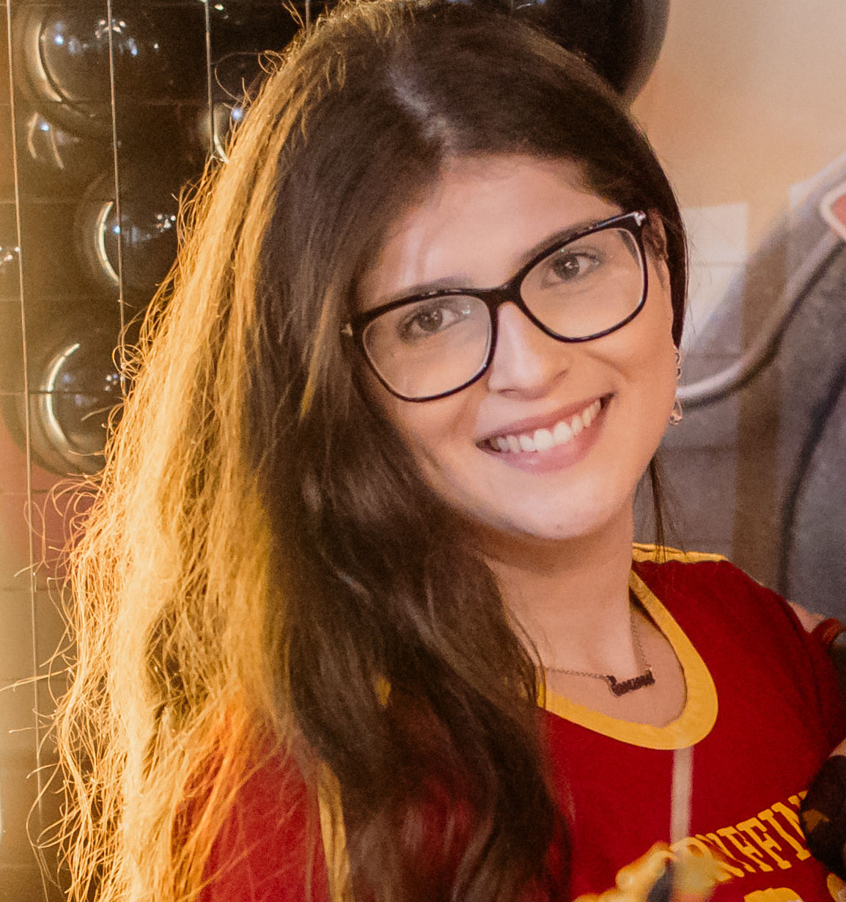

"Never let the fear of striking out keep you from playing the game."
- A Cinderella History
My name is Isadora, I am originally from Brazil, but currently based and being creative in New York. I am a dreamer, who loves to talk to people, get to know their stories and culture, hence my passion for design, and for creating something that is functional for everyone.
I have a background in Filmmaking, and with over 5 years of experience in graphic design, as well as interior desing.
Oh well, what can I say? If I am creating and telling a story through my work, I am happy.
I believe that every website and mobile application tells a story through their interface and ensuring that this is done in a easy and interactive way that dialogues with the user is my life mission.
User Centered Design
User Research
Information Architecture
Interactive Prototyping
Wireframing
User Testing
Branding & Logo Design
Web Development
Figma
Sketch
Adobe Creative Suite
Google Analytics
imorandicabrera@gmail.com